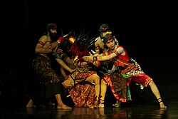
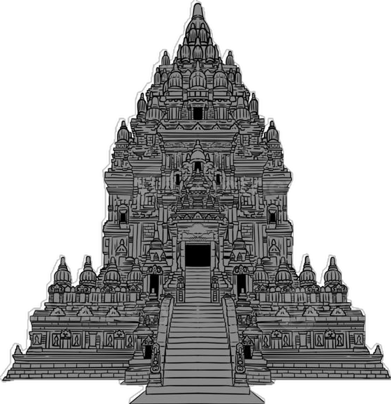
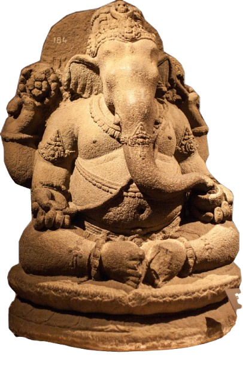
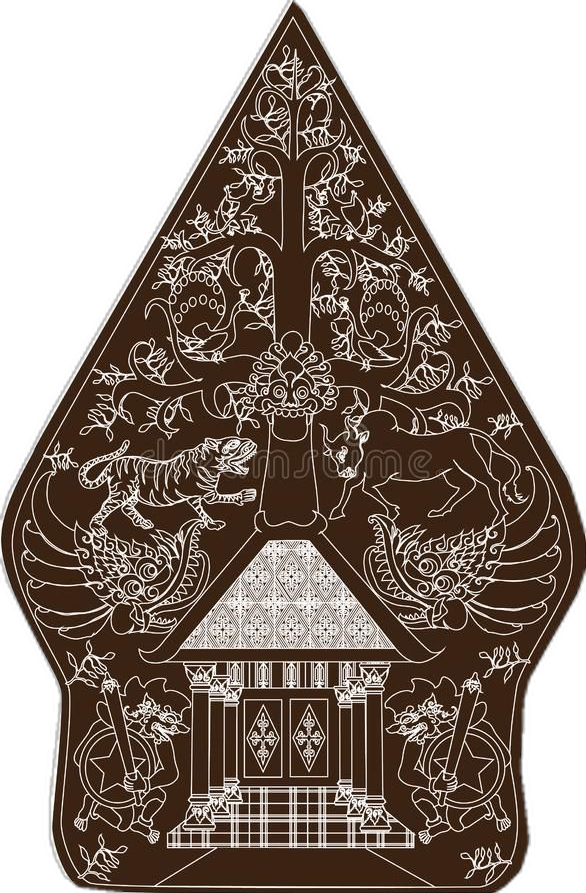
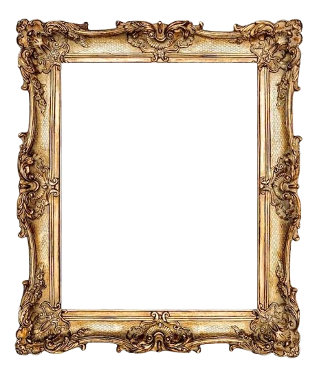

Jelajahi Kekayaan
Temukan adat istiadat, kuliner, pakaian daerah, dan kesenian Jawa Tengah yang telah didigitalisasi untuk generasi mendatang.
Temukan Warisan Budaya Jawa Tengah
✦ Warisan Leluhur · Didigitalisasi dengan Teknologi Modern
Kategori Budaya Jawa Tengah
Lima pilar budaya utama Jawa Tengah yang telah terdokumentasi secara digital

Kesenian
- Karawitan
- Ketoprak
- Wayang Orang
- Tari Serimpi
- Campursari
Kuliner
- Getuk
- Tahu Gimbal
- Garang Asem
- Dawet Ayu
- Mangut Lele

Pakaian
- Surjan
- Lurik
- Kebaya Kartini
- Kain Jarik
- Iket Jawa
Adat & Tradisi
- Nyadran
- Padusan
- Dugderan
- Ruwatan
- Sedekah Laut

Lestarikan Budaya Jawa Tengah Bersama Teknologi
Menggabungkan budaya khas Jawa Tengah dengan teknologi digital modern — mulai dari digitalisasi budaya, AI narator budaya, hingga peta interaktif wisata dan tradisi Jawa Tengah.
Menggabungkan Budaya & Teknologi
Teknologi modern untuk melestarikan warisan leluhur

Platform Digital
Digitalisasi & AI
AI Narasi Budaya dan digitalisasi arsip beresolusi tinggi untuk mendokumentasikan setiap detail budaya.

Teknologi Terkini
Virtual Museum Jawa Tengah
Jelajahi museum budaya secara virtual dengan teknologi 360° dan Augmented Reality yang imersif dari mana saja.

Edukasi Interaktif
Belajar Budaya dengan Cara Modern
Modul pembelajaran, kuis interaktif, dan sertifikat digital untuk pelajar, mahasiswa, dan pecinta budaya dari seluruh Indonesia.
Kata Mereka tentang Budaya Jawa Tengah

R.A. Kartini
Pahlawan Nasional (Jepara)

Jenderal Soedirman
Pahlawan Nasional (Purbalingga)

Pangeran Diponegoro
Pahlawan Nasional